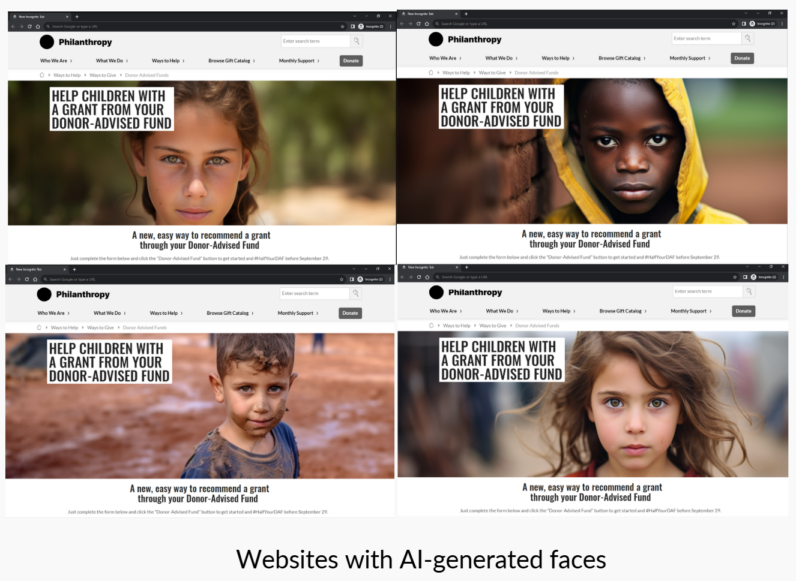
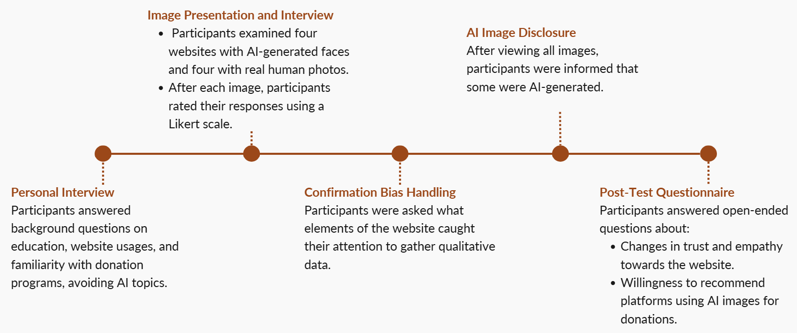

OVERVIEW
This project investigates the impact of AI-generated faces on individuals’ empathy and trustworthiness perceptions towards aid organizations. Through user testing on donation websites, it explores whether AI-generated images influence emotions and donation decisions.
OBJECTIVE
Analyzing the effect of AI-generated faces on empathy and trust in aid organizations, and their role in influencing donation behavior.Analyzing the effect of AI-generated faces on empathy and trust in aid organizations, and their role in influencing donation behavior.
PROBLEM STATEMENT
"How do AI-generated faces, compared to real faces, affect perceived trustworthiness, empathy, and willingness to donate on aid organization websites?"
METHODOLOGY
- Collected feedback from 20 participants via questionnaires using Likert scales and interviews.
- Conducted statistical analysis (Wilcoxon-signed test) and qualitative analysis (affinity diagram).
ITEM
Graduate project
METHODS
User Interviews, Surveys, Quantitative & Qualitative Methods, Data Analysis
TOOLS
Midjourney & Figma
TEAM
4 people
TIME FRAME
2 months
RESEARCH PROCESS
Planning & Execution
DEFINING THE PROBLEM
There is a significant research gap in understanding how users respond to AI-generated faces compared to photographs of real people, particularly concerning trust and empathy. This is important because AI is rapidly advancing, and it's becoming increasingly capable of creating human-like images.
DELIMITATIONS
- Did not use hybrid combinations of AI-generated and real photographs.
- Chose images where faces covered 60% or more of the photo.
- Used images with blurred background.
- Did not address the ethical aspects of using images of individuals in distress to generate empathy for driving financial support.
PARTICIPANT SELECTION
- Location: Recruitment at KTH campus, Stockholm.
- Criteria: Participants aged 18+, residing in Stockholm, diverse educational backgrounds.
- Size: 20 participants, primarily university students aged 21-28.
Methodology
SETUP
REAL IMAGE SELECTOR
- Source: Images from Pexels.com under Creative Commons licenses.
- Criteria: Depict children (ages 0-13) / No injuries or distress / Neutral expressions
- Limitations: Selection constrained by copyright and suitability; images cropped for face-covering ratios.

AI FACE GENERATOR
- Tool: Midjourney, chosen for realistic human faces.
- Process: AI images closely mimicked real images with minimal text prompts used for adjustments.

EXECUTION
CHALLENGES & ADJUSTMENTS
Bias Mitigation
To minimize bias, participants were initially unaware of the AI-generated images. After revealing this information, a second survey gathered insights on how this revelation changed their perceptions.
Iteration
After pilot testing, we refined the stimuli by adjusting image resolution and randomizing the image presentation to avoid pattern recognition.
RESULTS
Qualitative Data Results
GENUITY
- After being informed, participants identified AI-generated images by noticing bright eyes, smooth skin, and overly perfect features.
- Blurred backgrounds in real images also caused some participants to question their authenticity.
EMPATHY
- High empathy: Participants connected with the children's innocent faces, especially when sadness was visible, even after learning some images were AI-generated.
- Low empathy: Lack of background context made it harder for participants to connect, especially when they couldn’t link the children to specific situations like being refugees.
TRUST
- Trust was mostly linked to the professionalism of the website's design.
- AI-generated images led to a decrease in trust, as participants desired transparency about who they were helping.
WILLINGNESS TO DONATE
- Participants were willing to donate when the cause appeared beneficial.
- However, the revelation of AI-generated images led to decreased willingness due to concerns about transparency and authenticity.
Quantitative Data Results
- A Wilcoxon-signed rank test revealed no significant difference between AI-generated and real-face images in terms of empathy and trustworthiness (p > 0.05).
- AI-generated images received slightly higher average ratings, but the differences were not statistically meaningful.
- Reactions to AI-generated faces were more polarized, with participants expressing both higher and lower levels of empathy and trust, indicating varied perceptions.
DISCUSSION
Trust and Website UX
The UX of the donation web page played a significant role in shaping trust. A well-structured website could mitigate the negative impact of AI-generated images.
Empathy and Authenticity
Despite high empathy levels for the cause, trust and willingness to donate were affected by participants' desire for authenticity in the faces they perceived to be helping.
Predictability of Real vs. AI Faces
Real faces were generally perceived in a consistent manner, while AI-generated faces triggered more varied and unpredictable reactions, leading to a wider range of perceptions.
REFLECTION
Future Work
- Improving AI-Generated Realism: Future research could explore refining AI-generated faces to improve realism and reduce detectability.
- Extending the Study: This research could be extended to other domains, such as e-commerce or dating applications, where trust and empathy towards faces are critical factors.
Personal Takeaways
- Learned the importance of transparency in design, particularly when using AI-generated content. Participants valued knowing the origin of the images, which influences their trust in organizations.
- Gained knowledge in human perception, understanding the complexity and subjectivity of emotions related to trust and empathy.